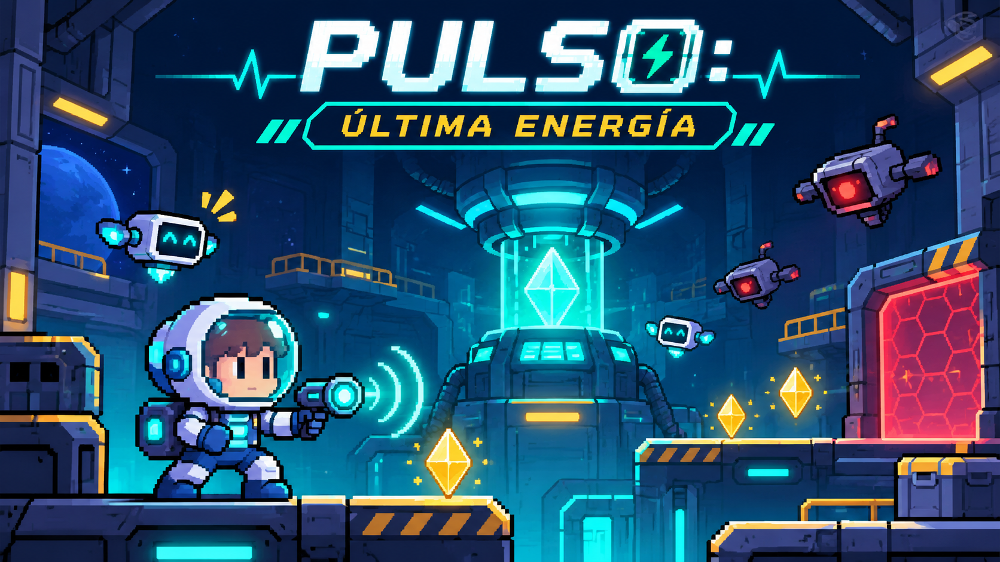

SECTOR1 / 3 · Muelle de Carga
PUNTOS0
CRISTALES0/3
TIEMPO90s
VIDAS♥♥♥

MISIÓN NÉBULA · 3 SECTORES
PULSO: ÚLTIMA ENERGÍA
Recupera los cristales y reinicia la estación NÉBULA.
Teclado: A/D o ←/→, W o ↑, ESPACIO, P (pausa) y M (sonido).
Escudo: —Recolecta todos los cristales para abrir la salida
Cómo jugar
A/D o ←/→ para moverte · W o ↑ para saltar · Espacio para lanzar un pulso · P para pausa · M para sonido. Los controles táctiles aparecen en pantallas pequeñas.